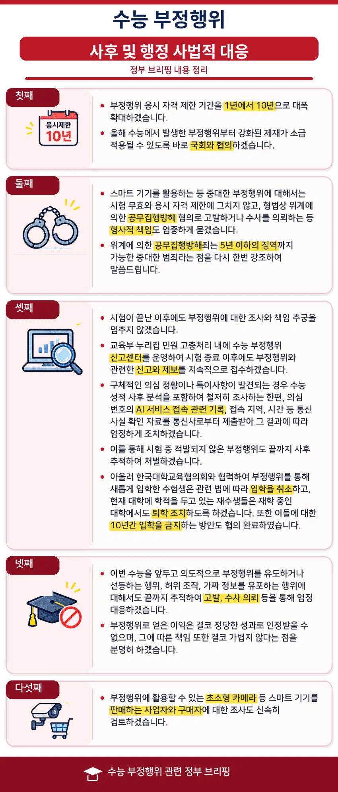
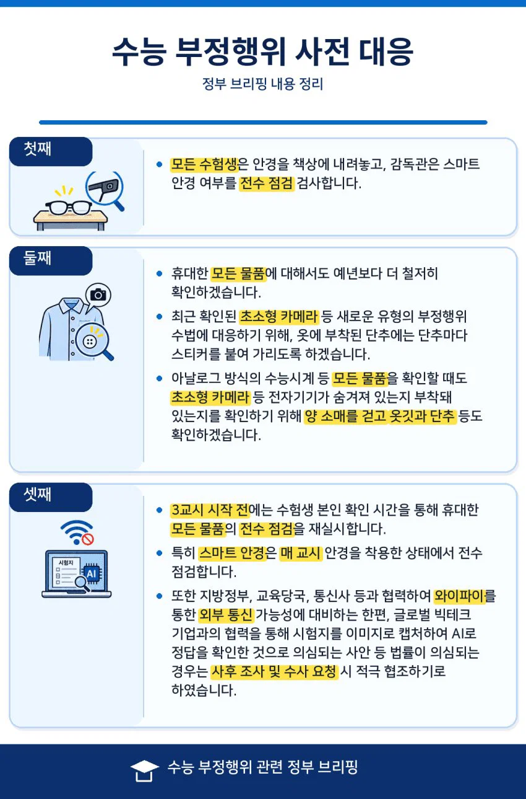

단추마다 스티커 부착
안경 소매 등 매 교시 전수 점검
가방 등은 복도에
시험 시작 전 “못 끄는” 재난문자 발송 (공습경보 등 못끄는걸로 재난문자 발송)
걸릴 시 10년간 수능 재응시 불가 (3년에서 10년으로 강화)
공무집행방해 혐의로 수사 및 의뢰
재수 반수생은 걸릴 시 재학 대학 퇴학 조치
수능 시험장 점검 감독관 8400명 추가
글로벌빅테크랑 협업해서 사후조치 등등
연기도 검토했으나 혼란만 가중시킬거라 보고 기습 대책 발표
결국 걸리면 처벌 강화되었고 더 잘 지켜보겠습니다 이거네
저기다가 각 시험장 카메라로 찍어놔서 영상으로 싹다 남겨야하는거 아닌가 사후 조치를 하더라도 근거가 있어야할거아냐